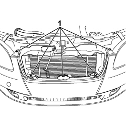
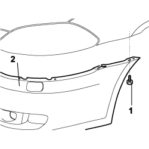

7210E10 R.R. FRONT BUMPER
- Path
- Procedures > 72 PANELS AND FRAMES > 7210 REMOVING-REFITTING > 7210E EXTERNAL PARTS > 7210E10 R.R. FRONT BUMPER
- Kind
- repair procedure (removal / refitting; the operation number is the code)
- Applies to
- all engines; all production periods
- Interactive page
- https://sloeber94.github.io/elrnDB-fCrm/en/#/194001240
Applies to: all engines; all production periods
 Removing
Removing
 Refitting
Refitting- Turn the ignition key to the OFF position.
- Open the bonnet.
- Disconnect the negative battery terminal.
Description | Connector | |
|---|---|---|
BATTERY |
Op. 7040D30 ENGINE BAY FRONT BEAM COVER - R R
Op. 7055A43 CENTRE FRONT GRILLE - R.R.
Op. 7055B90 LEFT FRONT WHEEL ARCH LINER - R.R.
Op. 7055B91 RIGHT FRONT WHEEL ARCH LINER - R.R.
1. Using the special tool, release the four retaining buttons for the front part of the protection under the engine on the bodyshell.
Tool | Description | Function | Validity |
|---|---|---|---|
1878077000 | Knife | Retainer removal |
2. Undo the four bolts (2a) securing the front protection under the engine (2b) to the bumper trim.
- Remove the front protection under the engine from the vehicle.

Applies to: all engines; all production periods
1. Disconnect the electrical connections from the fog lights.
Description | Connector | |
|---|---|---|
1 | LEFT FOG LIGHT |
Description | Connector | |
|---|---|---|
1 | RIGHT FOG LIGHT |

Applies to: all engines; all production periods
1. Undo the upper 5 bolts fixing the bumper.

Applies to: all engines; all production periods
1. Working on both sides, undo the two bolts fixing the bumper.
2. Remove the bumper from the vehicle.

Applies to: all engines; all production periods
Refitting
Removing- Check that the bumper is not damaged.
- Place the bumper in position attaching the centering pins and tighten the upper fixing bolts.
- Working on both sides, tighten the two bolts fixing the bumper.
- Connect the electrical connections to the fog lights.
Description | Connector | |
|---|---|---|
LEFT FOG LIGHT |
Description | Connector | |
|---|---|---|
RIGHT FOG LIGHT |
- Check that the front protection under the engine is not damaged.
- Position the front protection and fit the four retaining buttons.
- Tighten the bolts fixing the front protection to the bumper trim.
Op. 7055B91 RIGHT FRONT WHEEL ARCH LINER - R.R.
Op. 7055B90 LEFT FRONT WHEEL ARCH LINER - R.R.
Op. 7055A43 CENTRE FRONT GRILLE - R.R.
Op. 7040D30 ENGINE BAY FRONT BEAM COVER - R R
- Connect the negative battery terminal once again.
Description | Connector | |
|---|---|---|
BATTERY |
Topics linked from this page (7)
- 7040D30 ENGINE BAY FRONT BEAM COVER - R R
- 7055A43 CENTRE FRONT GRILLE - R.R.
- 7055B90 LEFT FRONT WHEEL ARCH LINER - R.R.
- 7055B91 RIGHT FRONT WHEEL ARCH LINER - R.R.
- A001 BATTERY
- F015 LEFT FOG LIGHT
- F016 RIGHT FOG LIGHT
Topics that link to this page (14)
- 1048B50 TURBOCHARGER INTERCOOLER - R + R
- 1084C34 ENGINE OIL COOLING RADIATOR - R + R
- 1084C36 ENGINE OIL COOLING RADIATOR SUPPORT BRACKET - R + R
- 1084C40 AIR DUCT FOR ENGINE OIL COOLING RADIATOR - R.R.
- 1088B20 ENGINE COOLING RADIATOR - R + R
- 1088B26 AIR DUCT ON RADIANT MASS - R.R.
- 1088B36 <x>UPPER PIN SUPPORTING ENGINE COOLING RADIATOR (ONE), LH OR RH - R&R</x>
- 1088E11 FANS WITH SINGLE ENGINE DUCT - R+R
- 2130A22 COOLING RADIATOR OF AUTOMATIC TRANSMISSION HYDRAULIC CIRCUIT - R + R - INCLUDING FLUID LEVEL TOP UP IF NECESSARY
- 5040A40 AIR CONDITIONING CONDENSER - R+R
- 5040A44 AIR CONDITIONING DRIER FILTER/ACCUMULATOR - R+R
- 5540B42 CONTROL UNIT OF ONE GAS DISCHARGE LIGHT CLUSTER R R
- 5540B70 LEFT FRONT LIGHT CLUSTER WITH DIRECTION INDICATOR - R.R.
- 5540B71 RIGHT FRONT LIGHT CLUSTER WITH DIRECTION INDICATOR - R.R.